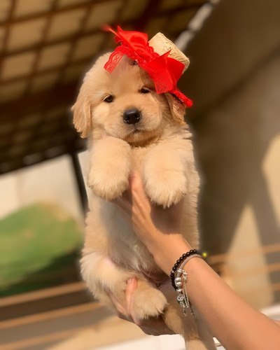
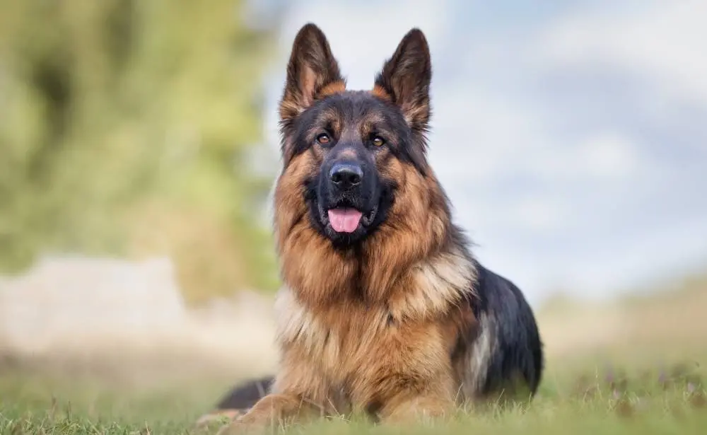
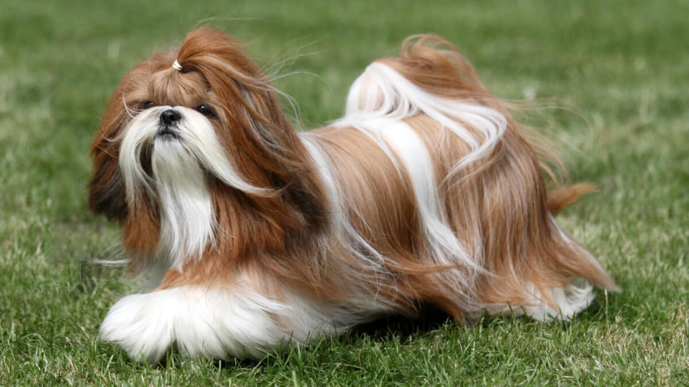
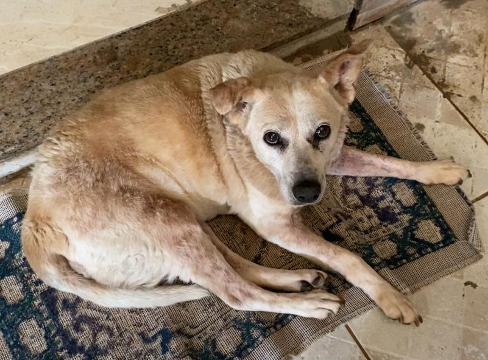
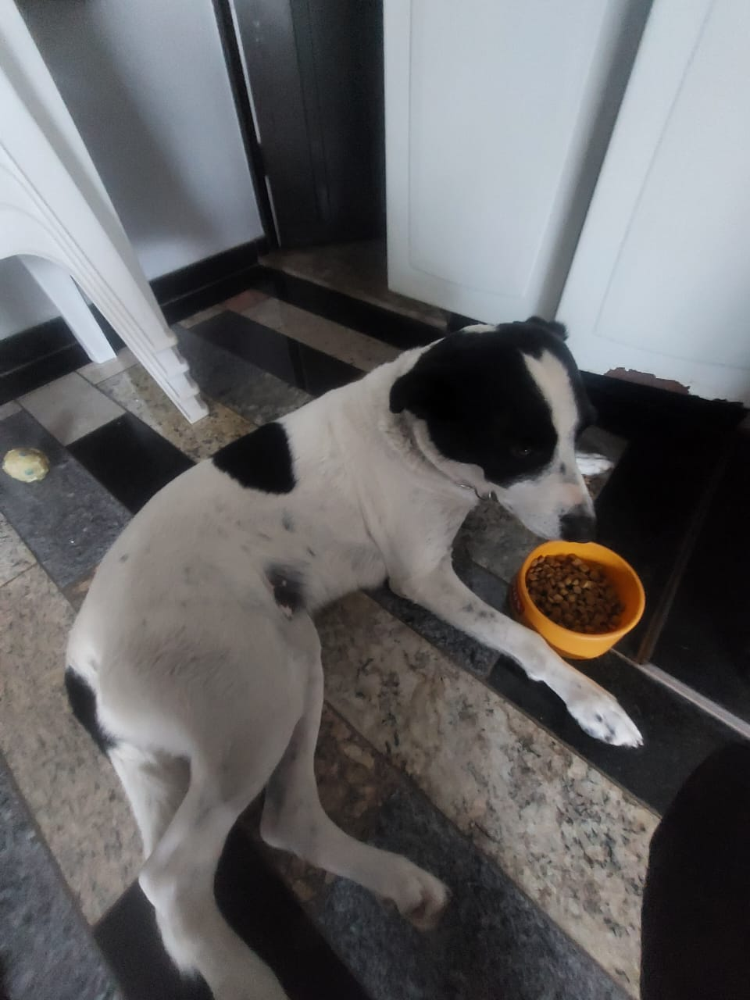

Nossos Cachorros
Max - Labrador

Idade: 3 anos
Personalidade: Brincalhão
Traços: Adora nadar
Luna - Golden Retriever

Idade: 6 meses
Personalidade: Dócil
Traços: Muito obediente
Thor - Pastor Alemão

Idade: 4 anos
Personalidade: Protetor
Traços: Excelente guardião
Mel - Poodle

Idade: 5 anos
Personalidade: Inteligente
Traços: Hipolalergênica
Wandinha - Bulldog

Idade: 3 anos
Personalidade: Calma
Traços: Ronca bastante
Bella - Shih Tzu

Idade: 4 anos
Personalidade: Alegre
Traços: Adora atenção
Dolly - Vira-Lata

Idade: 6 anos
Personalidade: Agitada
Traços: Adora atenção
Amora - Vira-Lata/Dalmata

Idade: 6 anos
Personalidade: Alegre
Traços: Dorminhoca
Chico - Dachshund

Idade: 4 anos
Personalidade: Alegre
Traços: Adora atenção